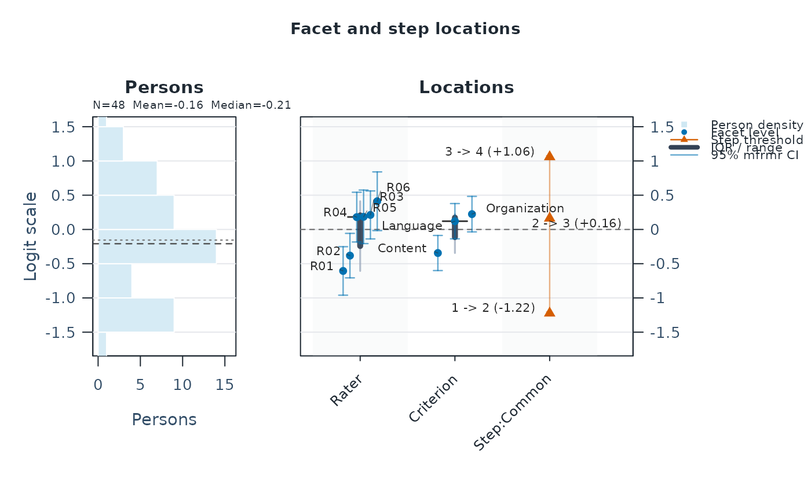
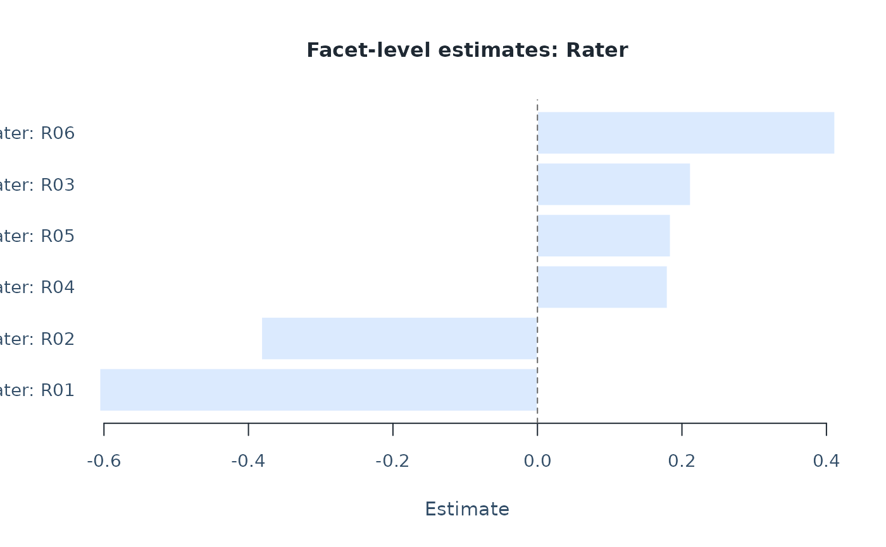
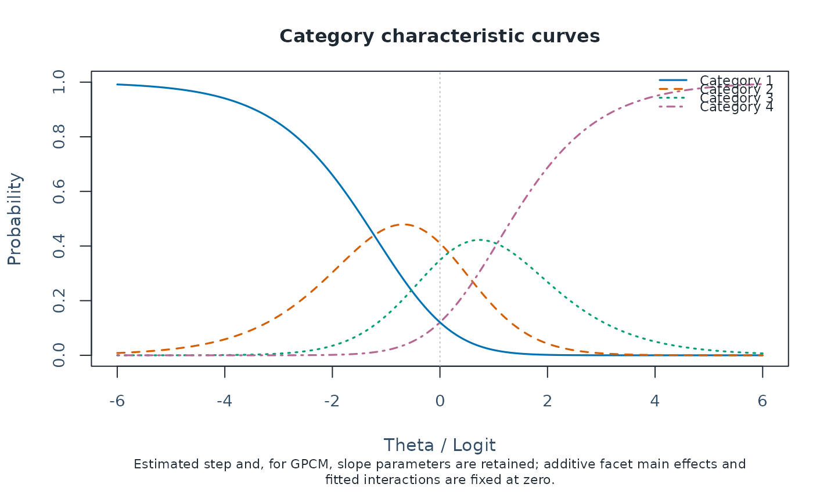

Plot fitted MFRM results with base R
Usage
# S3 method for class 'mfrm_fit'
plot(
x,
type = NULL,
facet = NULL,
top_n = 30,
theta_range = c(-6, 6),
theta_points = 241,
title = NULL,
palette = NULL,
label_angle = 45,
show_ci = NULL,
ci_level = 0.95,
group = NULL,
diagnostics = NULL,
include_fit_measures = TRUE,
fit_stat = c("Infit", "Outfit"),
fit_scale = c("mnsq", "zstd"),
zstd_method = c("engine", "facets"),
include_person = FALSE,
person_subset = NULL,
top_n_person = 30,
person_labels = c("flagged", "all", "none"),
facet_labels = c("all", "flagged", "none"),
panel = c("combined", "facet"),
fit_range = c(0.5, 1.5),
zstd_cut = 2,
draw = TRUE,
preset = c("standard", "publication", "compact", "monochrome"),
renderer = NULL,
wright_style = c("native", "facets_style"),
category_labels = NULL,
rows_per_logit = 2L,
wright_range = NULL,
extreme_placement = c("ends", "estimate"),
persons_per_star = NULL,
show_title = TRUE,
show_notes = TRUE,
...
)Arguments
- x
An
mfrm_fitobject fromfit_mfrm().- type
Plot type. Omit
type(or useNULL/"wright") for the primary native Wright map. Use"bundle","all", or"default"for the three-part fit bundle; otherwise choose one of"facet","person","step","wright","pathway","fit_pathway","ccc","ccc_surface", or"category_surface"."pathway"is the theta-to-expected-score display;"fit_pathway"is the fit-statistic-to-measure display.- facet
Optional facet name for
type = "facet".- top_n
Maximum number of non-person facet locations retained by the native Wright map for compact displays. Step transitions are always retained separately and do not consume this limit; any omitted facet locations are counted in the returned
retentiontable and disclosed in the plot subtitle/note. UseInffor a complete all-level final map. The FACETS-style payload always retains every fitted facet and step location.- theta_range
Numeric length-2 range for pathway, CCC, and category-surface plot data.
- theta_points
Number of theta grid points used for pathway, CCC, and category-surface plot data.
- title
Optional custom title.
- palette
Optional color overrides.
- label_angle
Rotation angle for x-axis labels where applicable.
- show_ci
Whether to add approximate confidence intervals when available.
NULLselects the display-specific default:TRUEfor the primary native Wright map andtype = "fit_pathway", andFALSEfor the FACETS-style ruler and other plot types. Withrenderer = "facets", explicitly settingshow_ci = TRUEcreates a hybrid display: FACETS-style ruler grammar with mfrmr uncertainty intervals.- ci_level
Confidence level used when
show_ci = TRUE.- group
Optional grouping for
type = "wright"to overlay per-group person-density curves (DIF / DFF screening view). Either a column name (looked up first ingroup_datawhen supplied through..., then infit$prep$data) or a vector aligned withfit$facets$person. Ignored for othertypevalues and forwright_style = "facets_style", whose person column is a single FACETS-style star frequency. To pass the source data alongside, useplot(fit, type = "wright", group = "MyCol", group_data = <df>).- diagnostics
Optional matching output from
diagnose_mfrm(). Recompute it after refitting; mismatched or outdated readiness records are rejected. When supplied, Wright-map standard errors and precision metadata reuse matching rows fromdiagnostics$measureswithout replacing fitted coordinates, while pathway plot data reusefit_measures,fit_status, andcurve_fit_statusinstead of recomputing diagnostics.- include_fit_measures
If
TRUE(default), pathway plot data include tidy fit-measure and fit-status tables for custom R graphics. Set toFALSEwhen only the curve coordinates are needed.- fit_stat
For
type = "fit_pathway", the horizontal fit statistic:"Infit"(default) or"Outfit".- fit_scale
For
type = "fit_pathway", use mean squares ("mnsq") or standardized fit ("zstd") on the horizontal axis.- zstd_method
For a ZSTD fit pathway, use the package engine degrees of freedom (
"engine", default) or the FACETS/Wright-Masters companion calculation ("facets"). The latter is a comparison aid, not a claim of complete FACETS output equivalence.- include_person
If
TRUE, include person rows in a fit pathway.- person_subset
Optional character vector of person IDs retained in a fit pathway before ranking.
- top_n_person
Maximum person rows retained in a fit pathway, ranked by distance from expected fit. Use
Inffor all selected persons.- person_labels
Person-label policy for a fit pathway:
"flagged"(default),"all", or"none".- facet_labels
Facet-level label policy for a fit pathway:
"all"(default),"flagged", or"none". This changes drawn labels only; all retained facet rows remain in the draw-free table.- panel
Fit-pathway layout:
"combined"(distinguish persons by shape) or"facet"(one base-graphics panel per facet).- fit_range
Mean-square review lines for a fit pathway.
- zstd_cut
Absolute ZSTD review line for a fit pathway.
- draw
If
TRUE, draw the plot with base graphics.- preset
Visual preset (
"standard","publication","compact", or"monochrome").- renderer
Wright-map renderer. Use
"native"(default) or"facets"for the FACETS Table 6-style visual layout. This is the canonical selector for new code. The native map is the primary display and includes available facet uncertainty by default. The closest FACETS-style visual usesshow_ci = FALSE.- wright_style
Wright-map renderer.
"native"preserves the package's histogram, point, range, and facet-SE display."facets_style"adds a FACETS Table 6-style text ruler with person-frequency stars, signed facet headers, and labeled score-transition lines. It is a visual-layout option, not a claim of numerical equivalence with FACETS. This explicit style name is equivalent torenderer = "facets". Addingshow_ci = TRUEto that style is an mfrmr/FACETS hybrid rather than the closest FACETS-style view.- category_labels
Optional score rubric labels used by
wright_style = "facets_style". Supply a named character vector keyed by original score, an unnamed vector with one label per retained category, or a data frame withScoreandLabelcolumns.- rows_per_logit
Number of FACETS-style ruler rows per logit.
- wright_range
Optional finite increasing length-2 logit range for the FACETS-style ruler.
NULLderives a range that contains the fitted data.- extreme_placement
In the FACETS-style renderer, place extreme-score persons at the ruler
"ends"or retain their fitted"estimate".- persons_per_star
Number of persons represented by one
*in the FACETS-style frequency column.NULLchooses a compact value automatically.- show_title
Logical; display the main plot title. Structural panel headings, axis labels, legends, and data labels remain visible.
- show_notes
Logical; display explanatory subtitles, footnotes, and review-only title markers. Notes remain available in the returned object, and R warnings are still issued when this is
FALSE.- ...
Additional arguments ignored for S3 compatibility.
Value
Invisibly, an mfrm_plot_data object (default and for any
single type), or an mfrm_plot_bundle when
type = "bundle" / "all" / "default". Each returned fit plot
includes domain-specific readiness and an interpretation status in its
data payload, plus a notes table and display settings. It also includes
a one-row scale_contract table recording
the fitted coordinate basis, population SD when applicable,
discrimination basis, and bounded-GPCM MML identification convention.
Details
Start with plot(fit): it draws a Wright map of person abilities, rater
severities, other facet locations, and category thresholds on one logit
scale. No plot options are needed for this first view.
This S3 plotting method provides the core fit-family visuals for
mfrmr. When type is omitted, it returns the Wright map alone as
an mfrm_plot_data object (the most useful single figure for a
first inspection). Pass type = "bundle" (or "all" / "default")
to obtain the legacy three-plot mfrm_plot_bundle containing a
Wright map, pathway map, and category characteristic curves. The
compact native default records any omitted facet locations in
data$retention and annotates the subtitle and drawn figure; use
top_n = Inf to retain every fitted location in the final Wright map.
Every retained native location is labelled. LabelX / LabelY provide
initial text positions; base graphics further adjusts these positions for
the device's text dimensions, avoiding nearby labels and fitted points where
space permits. Leader lines connect displaced text to the unchanged point.
label_points retains fitted coordinates and initial text positions for
custom renderers. Step transitions share one vertical ladder and their
labels include the fitted threshold logit. When the fit records
boundary-separated facet levels and no
display range was supplied, the native and FACETS-style maps use the same
robust automatic range and place those levels at ruler ends. Exact fitted
values and intervals remain in OriginalEstimate, CI_Lower, and
CI_Upper; DisplayEstimate, DisplayCI_Lower, DisplayCI_Upper, and the
clipping-status columns describe only the rendered coordinates. Endpoint
triangles and the plot footer disclose any omitted or clipped interval.
The returned object always carries machine-readable metadata through
the mfrm_plot_data contract, even when the plot is drawn
immediately.
Set show_title = FALSE and show_notes = FALSE for a figure whose title
and explanation will be supplied by the surrounding document. The returned
data$notes table contains Type and Text columns for interpretation,
reference-profile conditions, and display/retention notes where applicable;
print() also prints these notes. data$display records the two flags.
Original titles, subtitles, coordinates, and readiness metadata are retained.
Device-dependent crowding warnings are issued during drawing rather than
stored in this draw-free notes table. as_ggplot() respects these flags and
retains the notes in attr(plot, "mfrmr_notes").
Fit-family Wright, pathway, and CCC displays use a shared, CUD-informed
palette. The first eight series use an Okabe-Ito foundation with bright
yellow omitted and darker pink/amber/cyan entries for light backgrounds.
Beyond eight series, colours come from the dark half of the viridis HCL
palette. Expected-score and category curves also vary line type; Wright
locations retain their distinct point shapes, and small data labels use
dark neutral text. Six line types cycle for larger series sets, so dense
plots still require labels, panels, or more space. This is not a guarantee
of perceptual separation for every viewer or device.
preset = "monochrome" applies to these series in both base and ggplot
renderers. Custom palette values are retained in data$palette and used
during ggplot conversion; colour overrides keep the non-colour encodings.
See https://jfly.uni-koeln.de/color/ for Color Universal Design guidance.
Every fit-derived payload also carries data$fit_readiness,
data$interpretation_status, and data$interpretation_note. Availability
and interpretability are separate: when a numerical, data, design, or
stability status requires review, the coordinates remain available for
diagnosis, but the call warns and marks the returned subtitle and drawn
title REVIEW ONLY by default. Hiding that annotation changes presentation
only; it does not change the fit's interpretation status or suppress warnings.
A prior-regularized extreme MML EAP remains in fit$facets$person. If its
source fit is blocked, however, it is omitted from the Wright-map scale so
that a finite but non-interpretable trace cannot collapse the display. The
exact excluded rows and reason remain in data$person_exclusions, and the
omission is stated in data$retention_note.
type = "wright" shows persons, facet levels, and step thresholds on
a shared logit scale. Estimates are plotted as fitted, so the sign
convention follows the fit: higher person values indicate higher
ability, and higher non-person facet values indicate greater
severity/difficulty under the default negative facet orientation.
Facets listed in fit_mfrm(positive_facets = ...) are reversed
(higher values raise expected scores); state the active orientation in
figure captions when reporting.
Set renderer = "facets" (equivalently,
wright_style = "facets_style") for a line-printer-inspired common
ruler. That mode retains every facet location in its data and shows actual
(original, when scores were internally recoded) adjacent score transitions.
Its facets_style payload contains tidy ruler, person-frequency, facet,
step, mean-half-score, header, category-label, and settings tables for custom
graphics. RulerValue records the nearest discrete ruler row for
line-printer reconstruction, whereas step and midpoint lines are drawn at
their exact fitted DrawValue and step labels print that logit value. The
styling emulates the semantics of FACETS Table 6; estimates
and standard errors remain those produced by mfrmr. Use
show_ci = FALSE for the closest FACETS-style rendering. If
show_ci = TRUE is requested, interpret the result as a hybrid that adds
mfrmr uncertainty intervals to FACETS-style ruler grammar.
Column headings are retained even on narrow devices. If headings or person
frequency stars need more space, drawing warns; use a wider device or increase
persons_per_star for a more compact frequency column.
type = "pathway" shows expected score
traces and dominant-category regions across theta. This expected-score
display is distinct from the Bond-and-Fox-style fit-versus-measure
pathway: use type = "fit_pathway" for Infit/Outfit on the horizontal
axis and measure logits on the vertical axis. Its draw-free plot data
include person-selection settings, CI columns, and explicit SE-source
metadata. The expected-score pathway draw-free data also
includes pathway_long, pathway_annotations, fit_measures,
fit_status, and curve_fit_status, so R users can rebuild the pathway
map in ggplot2, plotly, or a report pipeline while keeping the same
underfit/overfit labels used by fit_measures_table(). type = "ccc" shows
category response probabilities. Multiple curve groups are faceted rather
than overplotted by the native renderer, and category-specific legends use
the same colours across panels. Multiple groups or more than five categories use one legend
beside the plotting area; colour presets use distinct default colours
beyond eight categories. For GPCM, these curves retain the
estimated step-facet slope; all curve families are reference-profile curves
with additive facet main effects and fitted interactions fixed at zero; the
native footer and ggplot subtitle disclose that conditioning.
Expected-score pathways use the same reference profile and expose the
same curve_basis table. These curves do not average over the observed
rater assignments or show a particular fitted interaction cell.
The draw-free curve_basis, CurveBasis, and PredictorOffset fields make
that conditioning explicit. type = "ccc_surface" or
type = "category_surface" returns 3D-ready category-probability surface
data for external rendering; it deliberately does not add a
plotly/rgl dependency or replace the 2D CCC/pathway reporting figures. The
returned object includes category_support, interpretation_guide, and
reporting_policy tables so retained zero-frequency categories and
manuscript-use boundaries remain visible to beginners. The remaining
types ("facet", "person", "step", "shrinkage") provide
compact location-specific displays.
Graphics layout
Single-panel plots advance through a caller's par(mfrow = ...) or
layout() arrangement and restore the style and margins they change.
Native Wright maps, multi-group CCC plots, and faceted fit pathways create
their own page layouts; call these outside a custom layout() arrangement.
Use renderer = "facets" for a single-panel Wright map in a custom grid.
A 7 by 5 inch device is a useful starting size for standalone plots;
dense PCM labels benefit from a wider device.
Native Wright/pathway plots warn when labels cannot be separated within
the available space. Enlarge the device (for example, to 12 by 8 inches)
and inspect the result; this warning concerns readability, not model fit.
Abbreviated labels retain distinguishing text where possible, falling back
to full names if needed. Original names remain available in the plot data.
For non-Latin labels, select a graphics device and font that support the
characters before plotting; the package retains the caller's font family.
Typical workflow
Fit a model with
fit_mfrm().Use
plot(fit)to inspect the Wright map at a glance.Switch to
type = "pathway","fit_pathway","ccc", or"shrinkage"for the relevant follow-up figure, ortype = "bundle"for the three-plot overview when preparing a FACETS-style summary.
Further guidance
For a plot-selection guide and extended examples, see
mfrmr_visual_diagnostics and
vignette("mfrmr-visual-diagnostics", package = "mfrmr").
Examples
# \donttest{
# Load the package and example ratings
library(mfrmr)
toy <- load_mfrmr_data("example_operational")
# Fit the model
fit <- fit_mfrm(
data = toy,
person = "Person",
facets = c("Rater", "Criterion"),
score = "Score",
method = "MML",
model = "RSM"
)
# Run each plot command separately to inspect its figure
plot(fit) # Wright map: persons, facets, and category thresholds

# Rater severity estimates (higher means stricter in this example)
plot(fit, type = "facet", facet = "Rater")

# Probability of each score category across the ability scale
plot(fit, type = "ccc")

# Optional: get plot data instead of drawing a figure
wright <- plot(fit, draw = FALSE)
head(wright$data$locations)
#> # A tibble: 6 × 37
#> Group Label PlotType Estimate SE CI_Level SE_Method PrecisionTier
#> <fct> <chr> <chr> <dbl> <dbl> <dbl> <chr> <chr>
#> 1 Rater R01 Facet level -0.606 0.181 0.95 Observation-tab… exploratory
#> 2 Rater R02 Facet level -0.382 0.166 0.95 Observation-tab… exploratory
#> 3 Rater R04 Facet level 0.180 0.185 0.95 Observation-tab… exploratory
#> 4 Rater R05 Facet level 0.184 0.199 0.95 Observation-tab… exploratory
#> 5 Rater R03 Facet level 0.212 0.179 0.95 Observation-tab… exploratory
#> 6 Rater R06 Facet level 0.412 0.219 0.95 Observation-tab… exploratory
#> # ℹ 29 more variables: SupportsFormalInference <lgl>, SEUse <chr>,
#> # CIBasis <chr>, CIUse <chr>, CIEligible <lgl>, CILabel <chr>,
#> # Measure_Source <chr>, CI_Lower <dbl>, CI_Upper <dbl>, Step <chr>,
#> # StepIndex <int>, BoundarySeparated <lgl>, XBase <dbl>, X <dbl>,
#> # OriginalEstimate <dbl>, BelowRange <lgl>, AboveRange <lgl>,
#> # DisplayEstimate <dbl>, DisplayLabel <chr>, OriginalCI_Lower <dbl>,
#> # OriginalCI_Upper <dbl>, DisplayCI_Lower <dbl>, DisplayCI_Upper <dbl>, …
# }